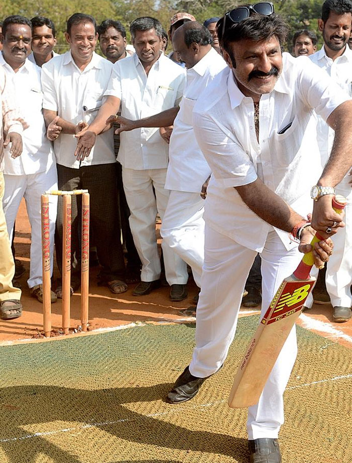

Produced by Abhishek Dharamkar Ramesh
Tartuffe or The Hypocrite
ACT II
SCENE I Orgon, Mariane
Dorine.
Yes, so he tells us, but his vanity
Does not sit so well with true piety.
A man pleased with a simple sanctity
Needn't vaunt his name and his dignity,
And the humility born of devotion
Suffers beneath such blatant ambition.
What good is his pride? . . . But perhaps I digress:
Let's speak of the man--not his nobleness.
Can you bestow, without feeling like a rat,
A girl like this on a man like that?
And shouldn't you think of propriety
And foresee the end with anxiety?
We know that some girls cannot remain chaste
If their husband's tush is not to their taste,
And that the best-laid plans for an honest life
Are somewhat easier for the best-laid wife,
And that many a man with a horned head
Has driven his wife to another man's bed.
It is entirely too much to ask
That a wife be faithful to a flabby ass.
And one who gives a girl to a man she hates
Is guilty before God for all her mistakes.
Consider the perils you expose yourself to.
Orgon.
So you think I should learn how to live from you!
Dorine.
You could do worse than follow my lead.
Orgon.
Dear daughter, do drop this maid's daffy creed;
I know what's best for you in this affair.
It's true I betrothed you to young Valere,
But I hear he likes his dicing and drinking
And even worse is inclined to free-thinking.
I note with regret we don't see him at mass.
Dorine.
Must he be there the same moment you pass
Like those who attend only to be seen?
Orgon.
Your advice isn't wanted. Don't intervene.
Tartuffe is on the path to salvation,
And that is a treasure past calculation.
This wedding will bring blessings beyond measure,
And be crowned with great sweetness and pleasure.
Together you will live, thriving on love
Like new-born babes, or a pair of turtledoves.
You will never be found in angry debate
For you will find all that you wish in this mate.
Dorine.
She'll only make him a cuckold, I'm sure.
Orgon.
What?
Dorine.
He looks just like a caricature,
And his fate, monsieur, will make him an ass
No matter how much virtue your daughter has.
Orgon.
Don't interrupt me and remember your place
And quit sticking your nose up in my face!
Dorine.
I'm only trying, sir, to protect you.[Hereafter she always interrupts him at the moment he begins speaking to his daughter.]
Orgon.
You're too kind, but do shut up--please do!
Dorine.
It's true I betrothed you to young Valere,
But I hear he likes his dicing and drinking
And even worse is inclined to free-thinking.
I note with regret we don't see him at mass.
| Character |
Actor |
Offer |
| Orgon |
Nandamuri Balakrishna |
20 Million |
| Dorine |
Akhanda |
10 Million |
Link to play2.html
